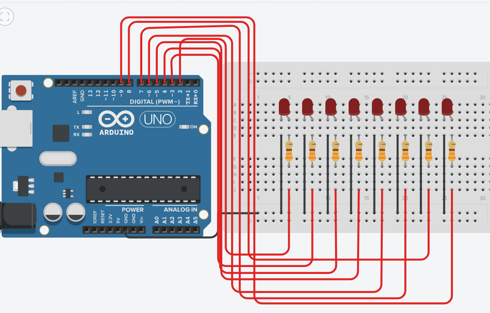

8 LEDs que mostram números em binário via Monitor Serial 💡
Você completou 0 de 12 etapas
Antes de começar, separe TODOS os componentes necessários:
Antes de montar, vamos entender o que o circuito vai fazer!
No sistema decimal usamos 10 dígitos (0 a 9). No sistema binário usamos apenas 2 dígitos: 0 e 1. Um LED apagado representa o bit 0, e um LED aceso representa o bit 1.
| Decimal | Binário (8 bits) | LEDs acesos (pinos) |
|---|---|---|
| 0 | 00000000 | nenhum |
| 1 | 00000001 | D2 |
| 2 | 00000010 | D3 |
| 5 | 00000101 | D2, D4 |
| 13 | 00001101 | D2, D4, D5 |
| 42 | 00101010 | D3, D5, D7 |
| 100 | 01100100 | D4, D7, D8 |
| 255 | 11111111 | todos (D2 a D9) |
Vamos montar os 8 LEDs na protoboard de forma organizada, um ao lado do outro.
Cada LED precisa de um resistor para limitar a corrente e não queimar.
Cada resistor fica abaixo do LED, na mesma coluna, ligando o cátodo (−) até a parte inferior da protoboard, que depois vai para o GND do Arduino.
Agora conectamos cada LED ao pino digital correspondente do Arduino com jumpers.

Montagem final dos LEDs posicionados corretamente na protoboard.
/dev/ttyUSB0 ou /dev/cu.usbmodem...Vamos analisar o código antes de carregar. Entender o código é tão importante quanto montar o circuito!
setup() quanto no loop().
Sempre inicializada em 0.
pinMode(pino, OUTPUT) configura o pino como saída —
o Arduino vai enviar tensão (5V ou 0V) para ligar/apagar os LEDs.
Serial.available() > 0 → verifica se chegou algo pelo Monitor SerialSerial.readString() → lê o texto digitado (ex: "42").toInt() → converte "42" (texto) para 42 (número inteiro)
CodigoArduinoIde.ino)Agora que tudo funciona, vamos ir além! Tente os desafios abaixo:
Modifique o código para que o Arduino conte de 0 a 255 automaticamente, sem precisar do Monitor Serial:
Faça o contador ir de 255 até 0 e depois reiniciar:
Faça um único LED "andar" da direita para a esquerda (1, 2, 4, 8, 16, 32, 64, 128):
Você construiu um conversor Decimal → Binário com Arduino!
ISW044 – Sistemas Embarcados
Aula 02 concluída ✅ | Aula 03 aguardando você!